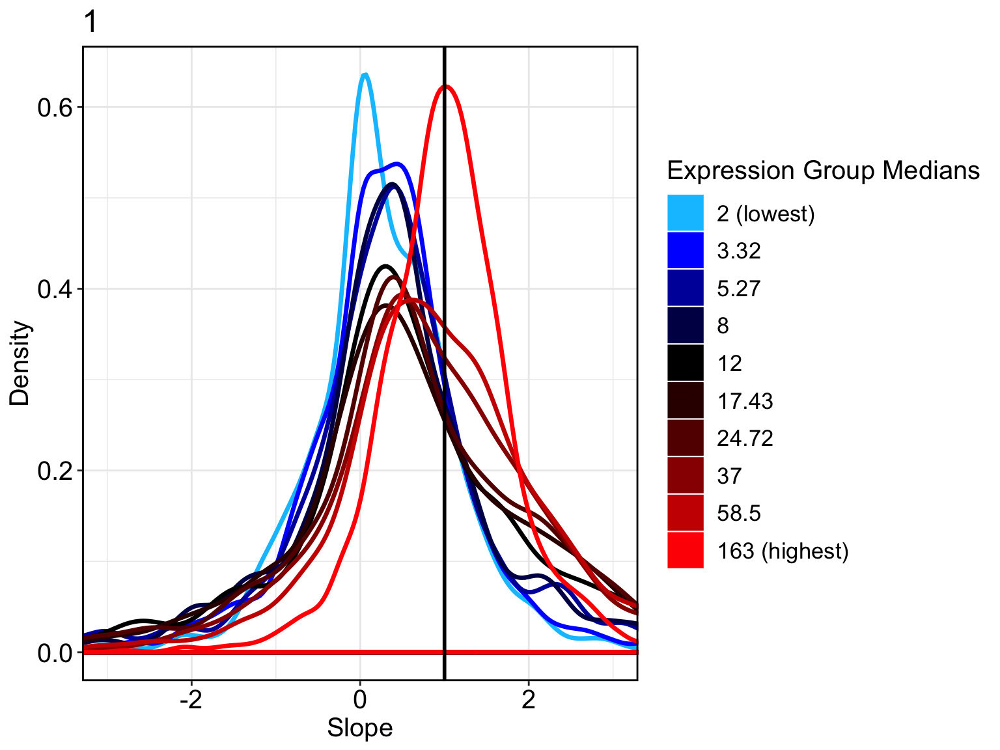
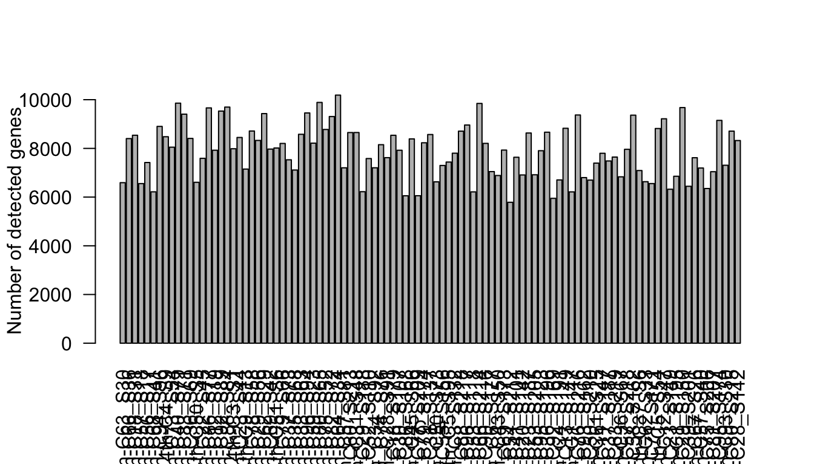
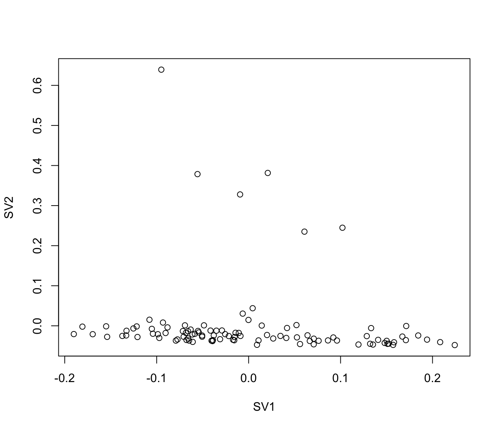
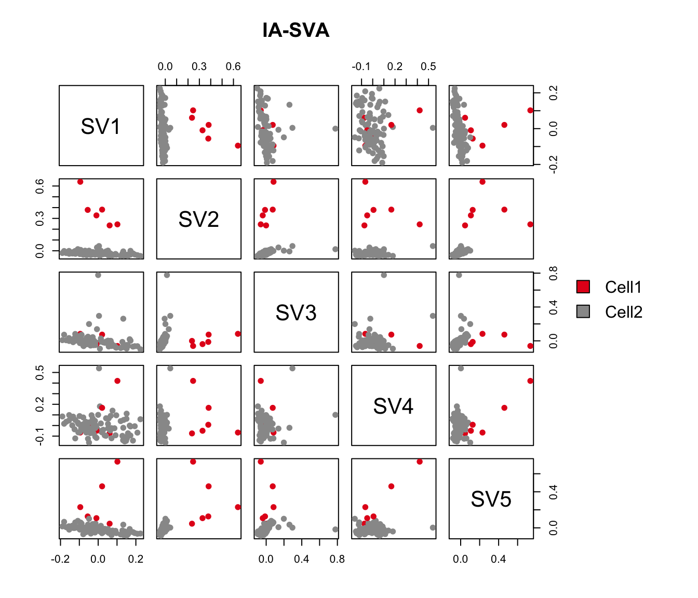
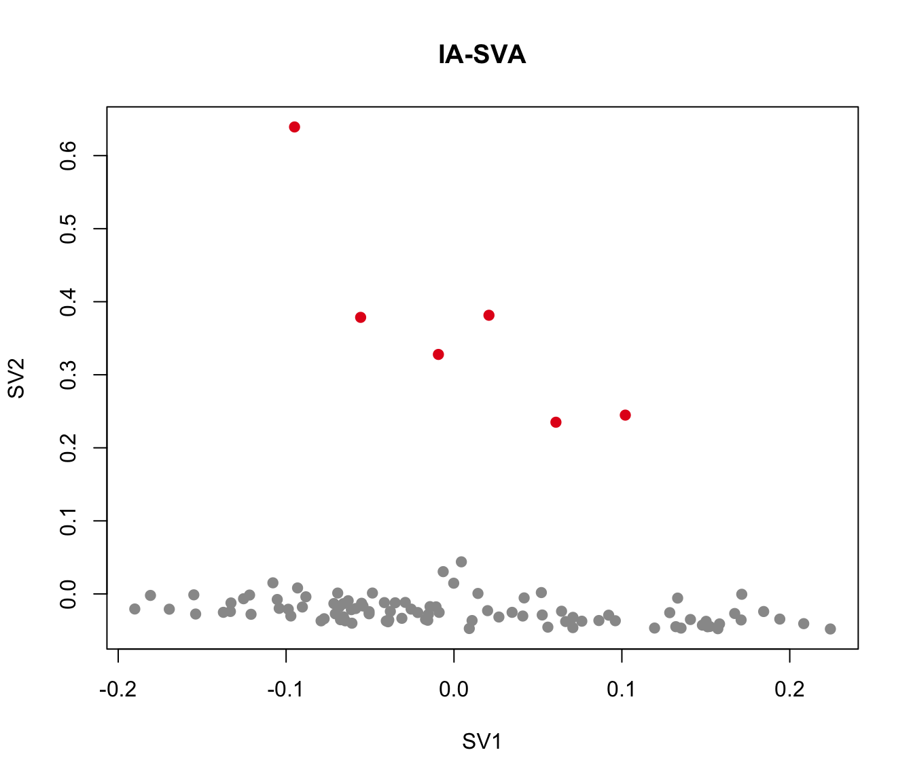
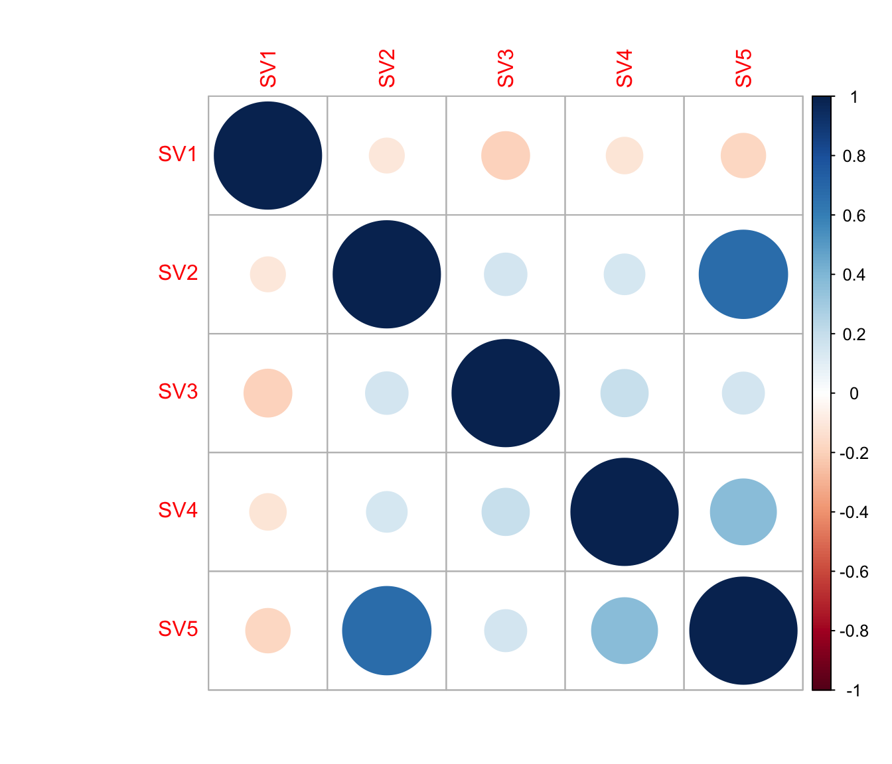

Detecting hidden heterogeneity in single cell RNA-Seq data
Donghyung Lee
2018-08-03
- Install packages
- Load packages
- Load the islet single cell RNA-Seq data
- Extract alpha cells (GCG expressed cells) from non-diabetics
- Normalization using SCnorm
- Calculate the number of detected genes
- Run IA-SVA
- Find marker genes for the detected heterogeneity (SV2).
- Run tSNE to detect the hidden heterogeneity.
- Run principal component analysis (PCA) to detect the hidden heterogeneity (SV2).
- Run surrogate variable analysis (SVA) to detect the hidden heterogeneity (SV2).
- Correlation between SV2 and the geometric library size
- Session information
Last updated: 2018-08-03
workflowr checks: (Click a bullet for more information)-
✔ R Markdown file: up-to-date
Great! Since the R Markdown file has been committed to the Git repository, you know the exact version of the code that produced these results.
-
✔ Environment: empty
Great job! The global environment was empty. Objects defined in the global environment can affect the analysis in your R Markdown file in unknown ways. For reproduciblity it’s best to always run the code in an empty environment.
-
✔ Seed:
set.seed(20180731)The command
set.seed(20180731)was run prior to running the code in the R Markdown file. Setting a seed ensures that any results that rely on randomness, e.g. subsampling or permutations, are reproducible. -
✔ Session information: recorded
Great job! Recording the operating system, R version, and package versions is critical for reproducibility.
-
Great! You are using Git for version control. Tracking code development and connecting the code version to the results is critical for reproducibility. The version displayed above was the version of the Git repository at the time these results were generated.✔ Repository version: 6e130ac
Note that you need to be careful to ensure that all relevant files for the analysis have been committed to Git prior to generating the results (you can usewflow_publishorwflow_git_commit). workflowr only checks the R Markdown file, but you know if there are other scripts or data files that it depends on. Below is the status of the Git repository when the results were generated:
Note that any generated files, e.g. HTML, png, CSS, etc., are not included in this status report because it is ok for generated content to have uncommitted changes.Ignored files: Ignored: .DS_Store Ignored: .Rhistory Ignored: .Rproj.user/ Ignored: data/.DS_Store Ignored: inst/.DS_Store Ignored: inst/doc/.DS_Store Ignored: vignettes/.DS_Store Untracked files: Untracked: analysis/figure/ Untracked: analysis/hidden_heterogeneity_glioblastoma.Rmd Untracked: output/Lawlor_Islets_Alpha_Doublets_Figure2_ABCD.pdf Untracked: output/Lawlor_Islets_Alpha_Doublets_SV2_Genes_rsqcutoff0.3.txt Untracked: output/Lawlor_Islets_Alpha_Doublets_SV2_Genes_rsqcutoff0.6.txt Untracked: output/Lawlor_Islets_Alpha_iasva_SV2Markers_rsqcutoff0.3_pheatmap_iasvaV0.95.pdf Untracked: output/Lawlor_Islets_Alpha_iasva_SV2Markers_rsqcutoff0.6_pheatmap_iasvaV0.95.pdf Unstaged changes: Deleted: analysis/about.Rmd Modified: analysis/license.Rmd Modified: output/Clustering_analyses_figure2.pdf
Expand here to see past versions:
The iasva package can be used to detect hidden heterogenity within bulk or single cell sequencing data. To illustrate how to use the iasva package for heterogenity detection, we use real-world single cell RNA sequencing (scRNA-Seq) data obtained from human pancreatic islet samples (Lawlor et. al., 2016). This dataset is included in a R data package (“iasvaExamples”) containing data examples for IA-SVA (https://github.com/dleelab/iasvaExamples). To install the package, follow the instruction provided in the GitHub page.
Install packages
#devtools
library(devtools)
#iasva
devtools::install_github("UcarLab/iasva")
#iasvaExamples
devtools::install_github("dleelab/iasvaExamples")Load packages
rm(list=ls())
library(irlba) # partial SVD, the augmented implicitly restarted Lanczos bidiagonalization algorithm
library(iasva)
library(iasvaExamples)
library(sva)
library(SCnorm)Warning: package 'SCnorm' was built under R version 3.5.1library(Rtsne)
library(pheatmap)
library(corrplot)
library(DescTools) #pcc i.e., Pearson's contingency coefficient
library(RColorBrewer)
library(SummarizedExperiment)
color.vec <- brewer.pal(9, "Set1")[c(1,9)]
# Normalization.
normalize <- function(counts)
{
normfactor <- colSums(counts)
return(t(t(counts)/normfactor)*median(normfactor))
}Load the islet single cell RNA-Seq data
data("Lawlor_Islet_scRNAseq_Read_Counts")
data("Lawlor_Islet_scRNAseq_Annotations")
ls()[1] "color.vec" "Lawlor_Islet_scRNAseq_Annotations"
[3] "Lawlor_Islet_scRNAseq_Read_Counts" "normalize" counts <- Lawlor_Islet_scRNAseq_Read_Counts
anns <- Lawlor_Islet_scRNAseq_Annotations
dim(anns)[1] 638 26dim(counts)[1] 26542 638summary(anns) run cell.type COL1A1 INS
Length:638 Length:638 Min. :1.00 Min. :1.000
Class :character Class :character 1st Qu.:1.00 1st Qu.:1.000
Mode :character Mode :character Median :1.00 Median :1.000
Mean :1.03 Mean :1.414
3rd Qu.:1.00 3rd Qu.:2.000
Max. :2.00 Max. :2.000
PRSS1 SST GCG KRT19
Min. :1.000 Min. :1.000 Min. :1.000 Min. :1.000
1st Qu.:1.000 1st Qu.:1.000 1st Qu.:1.000 1st Qu.:1.000
Median :1.000 Median :1.000 Median :1.000 Median :1.000
Mean :1.038 Mean :1.039 Mean :1.375 Mean :1.044
3rd Qu.:1.000 3rd Qu.:1.000 3rd Qu.:2.000 3rd Qu.:1.000
Max. :2.000 Max. :2.000 Max. :2.000 Max. :2.000
PPY num.genes Cell_ID UNOS_ID
Min. :1.000 Min. :3529 10th_C1_S59 : 1 ACCG268 :136
1st Qu.:1.000 1st Qu.:5270 10th_C10_S104: 1 ACJV399 :108
Median :1.000 Median :6009 10th_C11_S96 : 1 ACEL337 :103
Mean :1.028 Mean :5981 10th_C13_S61 : 1 ACIW009 : 93
3rd Qu.:1.000 3rd Qu.:6676 10th_C14_S53 : 1 ACCR015A: 57
Max. :2.000 Max. :8451 10th_C16_S105: 1 ACIB065 : 57
(Other) :632 (Other) : 84
Age Biomaterial_Provider Gender Phenotype
Min. :22.00 IIDP : 45 Female:303 Non-Diabetic :380
1st Qu.:29.00 Prodo Labs:593 Male :335 Type 2 Diabetic:258
Median :42.00
Mean :39.63
3rd Qu.:53.00
Max. :56.00
Race BMI Cell_Type Patient_ID
African American:175 Min. :22.00 INS :264 P1 :136
Hispanic :165 1st Qu.:26.60 GCG :239 P8 :108
White :298 Median :32.95 KRT19 : 28 P3 :103
Mean :32.85 SST : 25 P7 : 93
3rd Qu.:35.80 PRSS1 : 24 P5 : 57
Max. :55.00 none : 21 P6 : 57
(Other): 37 (Other): 84
Sequencing_Run Batch Coverage Percent_Aligned
12t : 57 B1:193 Min. :1206135 Min. :0.8416
4th : 57 B2:148 1st Qu.:2431604 1st Qu.:0.8769
9th : 57 B3:297 Median :3042800 Median :0.8898
10t : 56 Mean :3160508 Mean :0.8933
7th : 55 3rd Qu.:3871697 3rd Qu.:0.9067
3rd : 53 Max. :5931638 Max. :0.9604
(Other):303
Mitochondrial_Fraction Num_Expressed_Genes
Min. :0.003873 Min. :3529
1st Qu.:0.050238 1st Qu.:5270
Median :0.091907 Median :6009
Mean :0.108467 Mean :5981
3rd Qu.:0.142791 3rd Qu.:6676
Max. :0.722345 Max. :8451
ContCoef(table(anns$Gender, anns$Cell_Type))[1] 0.225969ContCoef(table(anns$Phenotype, anns$Cell_Type))[1] 0.1145096ContCoef(table(anns$Race, anns$Cell_Type))[1] 0.3084146ContCoef(table(anns$Patient_ID, anns$Cell_Type))[1] 0.5232058ContCoef(table(anns$Batch, anns$Cell_Type))[1] 0.3295619The annotations describing the islet samples and experimental settings are stored in “anns” and the read counts information is stored in “counts”.
Extract alpha cells (GCG expressed cells) from non-diabetics
To illustrate how IA-SVA can be used to detect hidden heterogeneity within a homogenous cell population (i.e., alpha cells), we use read counts of alpha cells from healthy (non-diabetic) subjects (n = 101).
# Selected T2D patients/GCG cell type
counts <- counts[, (anns$Phenotype!="Non-Diabetic")&(anns$Cell_Type=="GCG")]
anns <- subset(anns, (Phenotype!="Non-Diabetic")&(Cell_Type=="GCG"))
dim(counts)[1] 26542 101
dim(anns)[1] 101 26
anns <- droplevels(anns)
prop.zeros <- sum(counts==0)/length(counts)
prop.zeros[1] 0.6952497
# filter out genes that are sparsely and lowly expressed
filter = apply(counts, 1, function(x) length(x[x>5])>=3)
counts = counts[filter,]
dim(counts)[1] 14384 101
prop.zeros <- sum(counts==0)/length(counts)
prop.zeros[1] 0.4520968
Normalization using SCnorm
## count-depth relationship for all genes
Conditions = rep(c(1), each=101)
countDeptEst <- plotCountDepth(Data = counts, Conditions = Conditions,
FilterCellProportion = .1, NCores=8)
DataNorm <- SCnorm(Data = counts, Conditions = Conditions,
PrintProgressPlots = FALSE,
FilterCellNum = 10,
NCores=8)Setting up parallel computation using 8 coresGene filter is applied within each condition.1223 genes in condition 1 will not be included in the normalization due to
the specified filter criteria.A list of these genes can be accessed in output,
see vignette for example.Finding K for Condition 1Trying K = 1Trying K = 2Trying K = 3Trying K = 4Trying K = 5Trying K = 6Trying K = 7Trying K = 8Done!counts <- SingleCellExperiment::normcounts(DataNorm)
summary(colSums(counts)) Min. 1st Qu. Median Mean 3rd Qu. Max.
1274488 1315313 1332682 1358957 1386293 1650415 Calculate the number of detected genes
It is well known that the number of detected genes in each cell explains a very large portion of variability in scRNA-Seq data (Hicks et. al. 2015 BioRxiv, McDavid et. al. 2016 Nature Biotechnology). Frequently, the first principal component of log-transformed scRNA-Seq read counts is highly correlated with the number of detected genes (e.g., r > 0.9). Here, we calculate the number of detected genes for islet cells, which will be used as an known factor in the IA-SVA analyses.
Num_Detected_Genes <- colSums(counts>0)
Geo_Lib <- colSums(log(counts+1))
summary(Num_Detected_Genes) Min. 1st Qu. Median Mean 3rd Qu. Max.
5787 7043 7925 7881 8652 10188 summary(Geo_Lib) Min. 1st Qu. Median Mean 3rd Qu. Max.
16571 20527 24507 24349 27475 33830 barplot(Num_Detected_Genes, xlab="Cell", las=2,
ylab = "Number of detected genes")
lcounts <- log(counts + 1)
# PC1 and Geometric library size correlation
pc1 = irlba(lcounts - rowMeans(lcounts), 1)$v[,1] ## partial SVD
cor(Num_Detected_Genes, pc1)[1] 0.9778019cor(Geo_Lib, pc1)[1] 0.99461Run IA-SVA
Here, we run IA-SVA using Patient_ID and Geo_Lib_Size as known factors and identify five hidden factors. SVs are plotted in a pairwise fashion to uncover which SVs can seperate cell types.
set.seed(4543535)
Patient_ID <- anns$Patient_ID
mod <- model.matrix(~Patient_ID+Geo_Lib)
summ_exp <- SummarizedExperiment(assays = counts)
iasva.res<- iasva(summ_exp, mod[,-1],verbose=FALSE, permute=FALSE, num.sv=5) ##irlbaIA-SVA running...
SV 1 Detected!
SV 2 Detected!
SV 3 Detected!
SV 4 Detected!
SV 5 Detected!
# of significant surrogate variables: 5iasva.sv <- iasva.res$sv
plot(iasva.sv[,1], iasva.sv[,2], xlab="SV1", ylab="SV2")
Cluster <- as.factor(iasva.sv[,2] < 0.1)
levels(Cluster)=c("Cell1","Cell2")
table(Cluster)Cluster
Cell1 Cell2
6 95 # We identified 6 outlier cells based on SV2 that are marked in red
pairs(iasva.sv, main="IA-SVA", pch=21, col=color.vec[Cluster],
bg=color.vec[Cluster], oma=c(4,4,6,12)) #4,4,6,12
legend("right", levels(Cluster), fill=color.vec, bty="n")
plot(iasva.sv[,1:2], main="IA-SVA", pch=21, xlab="SV1", ylab="SV2",
col=color.vec[Cluster], bg=color.vec[Cluster])
cor(Num_Detected_Genes, iasva.sv[,2])[1] 0.1571675cor(Geo_Lib, iasva.sv[,2])[1] 0.2009796corrplot(cor(iasva.sv))
As shown in the above figure, SV2 clearly separates alpha cells into two groups: 6 outlier cells (marked in red) and the rest of the alpha cells (marked in green). SV3 and SV4 also capture outlier cells. However, we will focus on SV2 in the rest of the analyses.
Find marker genes for the detected heterogeneity (SV2).
Here, using the find_markers() function we find marker genes (n=105 genes) that are significantly associated with SV2 (multiple testing adjusted p-value < 0.05, default significance cutoff, and R-squared value > 0.3, default R-squared cutoff).
# try different R2 thresholds
pdf("output/Clustering_analyses_figure2.pdf")
r2.results <- study_R2(summ_exp, iasva.sv, selected.svs=2, no.clusters=2) # of markers (): 396total # of unique markers: 396# of markers (): 237total # of unique markers: 237# of markers (): 177total # of unique markers: 177# of markers (): 143total # of unique markers: 143# of markers (): 108total # of unique markers: 108# of markers (): 93total # of unique markers: 93# of markers (): 72total # of unique markers: 72# of markers (): 58total # of unique markers: 58# of markers (): 47total # of unique markers: 47# of markers (): 35total # of unique markers: 35# of markers (): 27total # of unique markers: 27# of markers (): 22total # of unique markers: 22# of markers (): 12total # of unique markers: 12# of markers (): 8total # of unique markers: 8# of markers (): 4total # of unique markers: 4# of markers (): 2total # of unique markers: 2# of markers (): 1total # of unique markers: 1dev.off()quartz_off_screen
2 marker.counts <- find_markers(summ_exp, as.matrix(iasva.sv[,2]), rsq.cutoff = 0.6)# of markers (): 27total # of unique markers: 27marker.counts.long <- find_markers(summ_exp, as.matrix(iasva.sv[,2]), rsq.cutoff = 0.3)# of markers (): 108total # of unique markers: 108nrow(marker.counts)[1] 27rownames(marker.counts) [1] "PMEPA1" "LINC00152" "MIR4435-1HG" "ENG" "ITGA5"
[6] "TMEM233" "PRDM1" "C8orf4" "ERG" "THBS1"
[11] "MEF2C" "LGALS1" "CD93" "ELTD1" "COL4A1"
[16] "COL4A2" "HBEGF" "SPARC" "SPARCL1" "RAPGEF5"
[21] "KDR" "GNG11" "CD9" "PODXL" "PLVAP"
[26] "IFI16" "RHOJ" nrow(marker.counts.long)[1] 108anno.col <- data.frame(Cluster=Cluster, SV2=iasva.sv[,2])
rownames(anno.col) <- colnames(marker.counts)
head(anno.col) Cluster SV2
4th-C63_S30 Cell2 -0.02724532
4th-C66_S36 Cell2 -0.02091476
4th-C18_S31 Cell2 -0.01190674
4th-C57_S18 Cell1 0.23502845
4th-C56_S17 Cell2 -0.03704850
4th-C68_S41 Cell2 -0.03570599cluster.col <- color.vec[1:2]
names(cluster.col) <- as.vector(levels(Cluster))
anno.colors <- list(Cluster=cluster.col)
anno.colors$Cluster
Cell1 Cell2
"#E41A1C" "#999999" pheatmap(log(marker.counts+1), show_colnames =FALSE,
clustering_method = "ward.D2",cutree_cols = 2,annotation_col = anno.col,
annotation_colors = anno.colors)
Correlation between SV2 and the geometric library size
cor(Num_Detected_Genes, iasva.sv[,2])[1] 0.1571675cor(Geo_Lib, iasva.sv[,2])[1] 0.2009796pdf(file="output/Lawlor_Islets_Alpha_Doublets_Figure2_ABCD.pdf", width=5, height=6)
layout(matrix(c(1,2,3,4), nrow=2, ncol=2, byrow=TRUE))
plot(iasva.sv[,1:2], main="IA-SVA", pch=21, xlab="SV1", ylab="SV2", col=color.vec[Cluster], bg=color.vec[Cluster])
legend("topright", levels(Cluster), border="white", fill=color.vec, bty="n")
plot(pca.res[,2:3], main="PCA", pch=21, xlab="PC2", ylab="PC3", col=color.vec[Cluster], bg=color.vec[Cluster])
plot(sva.res[,1:2], main="USVA", xlab="SV1", ylab="SV2", pch=21, col=color.vec[Cluster], bg=color.vec[Cluster])
plot(tsne.res$Y, main="tSNE", xlab="Dimension 1", ylab="Dimension 2", pch=21, col=color.vec[Cluster], bg=color.vec[Cluster])
dev.off()quartz_off_screen
2 anno.col <- data.frame(Cluster=Cluster)
rownames(anno.col) <- colnames(marker.counts)
head(anno.col) Cluster
4th-C63_S30 Cell2
4th-C66_S36 Cell2
4th-C18_S31 Cell2
4th-C57_S18 Cell1
4th-C56_S17 Cell2
4th-C68_S41 Cell2cluster.col <- color.vec
names(cluster.col) <- as.vector(levels(Cluster))
anno.colors <- list(Cluster=cluster.col)
anno.colors$Cluster
Cell1 Cell2
"#E41A1C" "#999999" pheatmap(log(marker.counts+1), show_colnames =FALSE,
clustering_method = "ward.D2",cutree_cols = 2,annotation_col = anno.col,
annotation_colors = anno.colors,
filename="output/Lawlor_Islets_Alpha_iasva_SV2Markers_rsqcutoff0.6_pheatmap_iasvaV0.95.pdf",
width=6, height=5)
pheatmap(log(marker.counts.long+1), show_colnames =FALSE,
clustering_method = "ward.D2",cutree_cols = 2,annotation_col = anno.col,
annotation_colors = anno.colors,
filename="output/Lawlor_Islets_Alpha_iasva_SV2Markers_rsqcutoff0.3_pheatmap_iasvaV0.95.pdf",
width=6, height=14)write.table(as.data.frame(rownames(marker.counts)),
file="output/Lawlor_Islets_Alpha_Doublets_SV2_Genes_rsqcutoff0.6.txt", quote=F,
row.names=F, col.names=F, sep=" ")
write.table(as.data.frame(rownames(marker.counts.long)),
file="output/Lawlor_Islets_Alpha_Doublets_SV2_Genes_rsqcutoff0.3.txt", quote=F,
row.names=F, col.names=F, sep=" ")Session information
sessionInfo()R version 3.5.0 (2018-04-23)
Platform: x86_64-apple-darwin15.6.0 (64-bit)
Running under: macOS Sierra 10.12.6
Matrix products: default
BLAS: /Library/Frameworks/R.framework/Versions/3.5/Resources/lib/libRblas.0.dylib
LAPACK: /Library/Frameworks/R.framework/Versions/3.5/Resources/lib/libRlapack.dylib
locale:
[1] en_US.UTF-8/en_US.UTF-8/en_US.UTF-8/C/en_US.UTF-8/en_US.UTF-8
attached base packages:
[1] parallel stats4 stats graphics grDevices utils datasets
[8] methods base
other attached packages:
[1] SummarizedExperiment_1.10.1 DelayedArray_0.6.1
[3] matrixStats_0.53.1 Biobase_2.40.0
[5] GenomicRanges_1.32.3 GenomeInfoDb_1.16.0
[7] IRanges_2.14.10 S4Vectors_0.18.3
[9] BiocGenerics_0.26.0 RColorBrewer_1.1-2
[11] DescTools_0.99.24 corrplot_0.84
[13] pheatmap_1.0.10 Rtsne_0.13
[15] SCnorm_1.2.1 sva_3.28.0
[17] BiocParallel_1.14.2 genefilter_1.62.0
[19] mgcv_1.8-23 nlme_3.1-137
[21] iasvaExamples_1.0.0 iasva_0.99.3
[23] irlba_2.3.2 Matrix_1.2-14
[25] workflowr_1.0.1 rmarkdown_1.9
loaded via a namespace (and not attached):
[1] bitops_1.0-6 bit64_0.9-7
[3] rprojroot_1.3-2 tools_3.5.0
[5] backports_1.1.2 R6_2.2.2
[7] DBI_1.0.0 lazyeval_0.2.1
[9] colorspace_1.3-2 tidyselect_0.2.4
[11] moments_0.14 bit_1.1-14
[13] compiler_3.5.0 git2r_0.21.0
[15] quantreg_5.36 expm_0.999-2
[17] SparseM_1.77 labeling_0.3
[19] scales_0.5.0 mvtnorm_1.0-8
[21] stringr_1.3.1 digest_0.6.15
[23] foreign_0.8-70 R.utils_2.6.0
[25] XVector_0.20.0 pkgconfig_2.0.1
[27] htmltools_0.3.6 manipulate_1.0.1
[29] limma_3.36.2 rlang_0.2.1
[31] RSQLite_2.1.1 bindr_0.1.1
[33] dplyr_0.7.5 R.oo_1.22.0
[35] RCurl_1.95-4.10 magrittr_1.5
[37] GenomeInfoDbData_1.1.0 Rcpp_0.12.17
[39] munsell_0.4.3 R.methodsS3_1.7.1
[41] stringi_1.2.2 whisker_0.3-2
[43] yaml_2.1.19 MASS_7.3-50
[45] zlibbioc_1.26.0 plyr_1.8.4
[47] grid_3.5.0 blob_1.1.1
[49] lattice_0.20-35 splines_3.5.0
[51] annotate_1.58.0 knitr_1.20
[53] pillar_1.2.3 boot_1.3-20
[55] reshape2_1.4.3 XML_3.98-1.11
[57] glue_1.2.0 evaluate_0.10.1
[59] data.table_1.11.4 MatrixModels_0.4-1
[61] gtable_0.2.0 purrr_0.2.5
[63] assertthat_0.2.0 ggplot2_2.2.1.9000
[65] xtable_1.8-2 survival_2.42-3
[67] SingleCellExperiment_1.2.0 tibble_1.4.2
[69] AnnotationDbi_1.42.1 memoise_1.1.0
[71] bindrcpp_0.2.2 cluster_2.0.7-1 This reproducible R Markdown analysis was created with workflowr 1.0.1